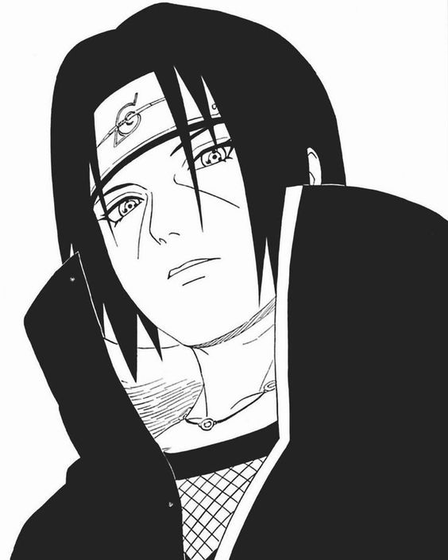

Background
Itachi was born into the Uchiha clan, known for their powerful Sharingan abilities. He excelled in the ninja academy and was a model ninja until the tragic massacre of his clan.
Itachi Uchiha
Abilities
Itachi possessed the Sharingan and Mangekyo Sharingan, granting him powerful genjutsu and fire-based ninjutsu. He was also a master of shurikenjutsu and taijutsu.
Legacy
Itachi's sacrifice and true motivations were later revealed to protect Konoha and Sasuke. His story is a tragic tale of duty, sacrifice, and the burden of power.